RECRUIT
INTERVIEW
実際に働く社員の声をご紹介します。
社会や地域を陰で支える
大事なお仕事です
- お名前
- D・S
- 入社年数
- 11年1ヶ月
- 現在の仕事内容
- 舗装工事を主としていますが、道路等に関するその他の作業、構造物やマンホールの交換や補修、草刈りなど細かな作業も仕事として、行なっています。
- 仕事のやりがい
- 「目に見えて、形として長く残る」｢周りの方からの感謝の声｣です。
舗装の現場が終わった後、白線などのラインが引かれて初めて完成を迎えますが、その瞬間に「みんなで力を合わせて形にした」という大きな達成感を味わえます。これこそが、この仕事の一番の醍醐味だと感じています。 - 求職者へのメッセージ
- 私達の仕事は、決して派手な仕事ではありません。しかし、｢社会や地域を陰で支える大事な仕事の一つ｣という自覚をもって、働いています。未経験の方でも、一つひとつ仕事を覚えてもらい、私達と一緒に、完成した時の達成感を味わっていただけたらと思います。
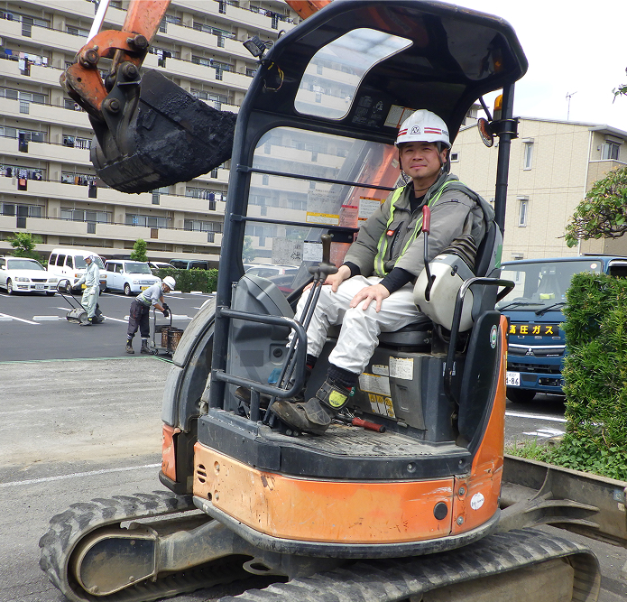
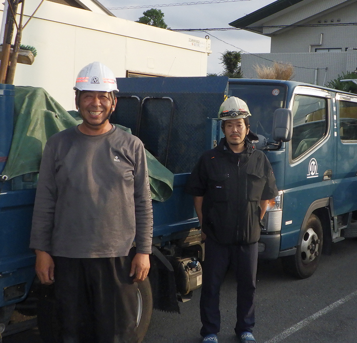
やりがいのある
「ものづくり」に挑戦
- お名前
- K・M
- 入社年数
- 10年
- 現在の仕事内容
- 営業（官・民）、積算・入札業務、現場サポート・作業
- 仕事のやりがい
- 営業や入札関連の業務を中心に担当していますが、工事を受注して終わりではなく、完了まで現場をサポートし、ときには自ら現場で作業を行うこともあります。最初から最後まで一連の工程に関われることで、工事が無事に完了した瞬間には、ひとつの業務だけでは得られない達成感を得ることができます。また、現場で培った経験を活かしてお客様へ最適な提案ができ、その結果として信頼をいただき受注につながった時には、営業としての充実感と手応えを強く感じることができます。
- 求職者へのメッセージ
- 未経験で専門知識がない人でも、入社後に身につけることができます。
大変な場面もありますが、部署関係なく相談できる職場です。
一緒に、やりがいのある『ものづくり』に挑戦しましょう。
自分のペースで
落ち着いて仕事ができる
- お名前
- K・Y
- 入社年数
- 10年
- 現在の仕事内容
- 事務業務全般を担当しています。主に書類作成やデータ入力、電話対応などを行い、現場スタッフがスムーズに業務を進められるようサポートしています。
- 仕事のやりがい
- 私は未経験から事務職として入社しました。前職はサービス業だったため最初は不安もありましたが、周りの方々に支えていただきながら少しずつ仕事を覚えることができました。少人数の会社だからこそ幅広い業務に携わる機会があり、日々新しい知識を学べることにやりがいを感じています。また、自分のペースで落ち着いて仕事ができる環境も魅力の一つです。
- 求職者へのメッセージ
- 当社は創業50年以上の歴史があり、地域の皆さまとの信頼関係を大切にしてきた会社です。私自身も未経験で入社し、気が付けば10年が経ちました。職場は落ち着いた雰囲気で、お休みなどの相談もしやすく、働きやすい環境が整っています。これまでの経験を活かしたい方はもちろん、新しいことに前向きに取り組める方も歓迎しています。ぜひ私たちと一緒に働きましょう。
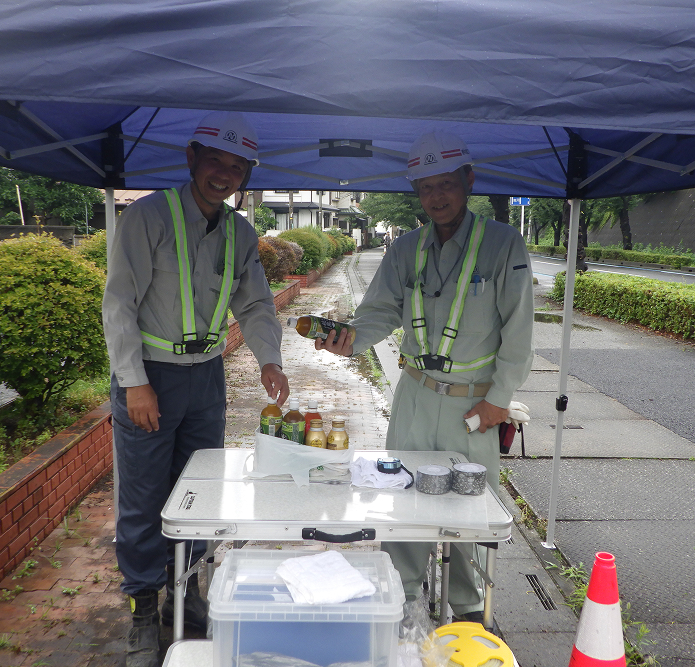
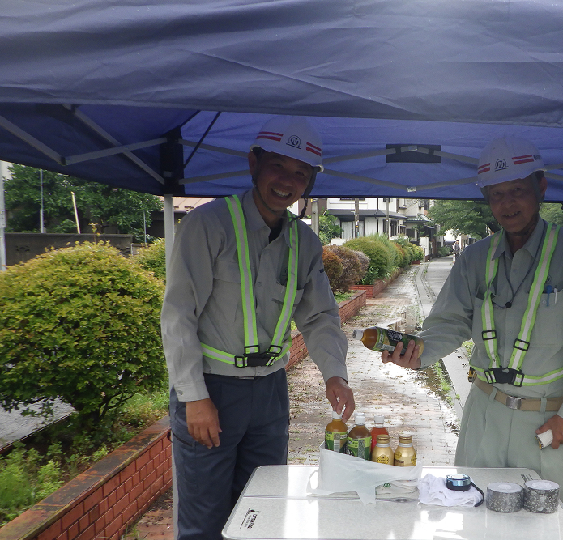
形として成果が残る
達成感
- お名前
- K・S
- 入社年数
- 6年目
- 現在の仕事内容
- 舗装工事を中心に維持工事として舗装補修、除草作業、冠水箇所の対応等を行っています。地域の皆様が安全で快適に利用できる道路環境を支える仕事です。
- 仕事のやりがい
- 工事現場は、現場ごとに様々なプロセスがあります。異なる課題と向き合いながら形として成果が残るため完成したときは達成感があります。おかげさまで毎日がスペシャル！
- 求職者へのメッセージ
- 経験者はもちろん未経験の方でも先輩社員が指導・サポートいたします。 体を動かす仕事が好きな方、夏の暑さに前向きに取り組める方大歓迎です！ご応募お待ちしております。
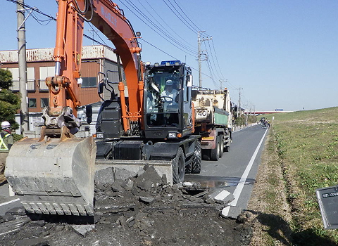
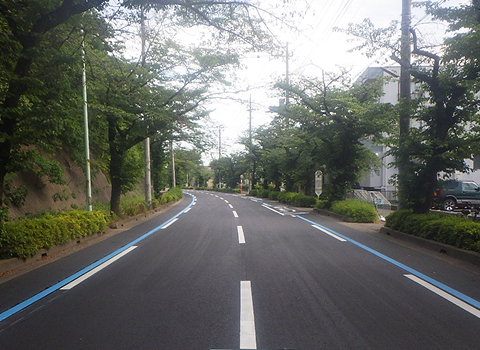
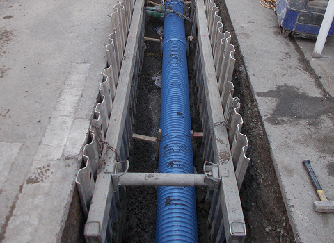
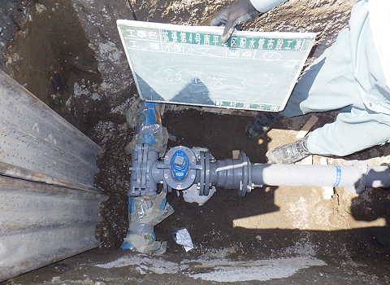
外国人実習生も
活躍しています
野村建工株式会社では、外国人技能実習生を積極的に受け入れています。
国籍や文化の違いを尊重しながら、安心して働き、技術を学べる環境づくりに取り組んでいます。
現在も多くの実習生が現場で活躍し、地域のインフラ整備を支える大切な仲間として成長しています。
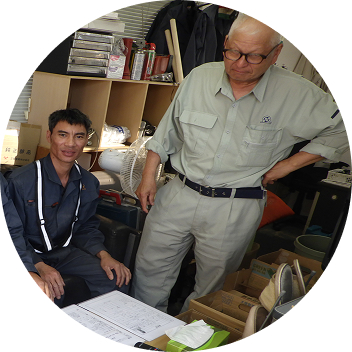
技術指導
経験豊富な先輩社員が
基礎から丁寧に指導し、現場で必要な
技術や知識を身につけられます。
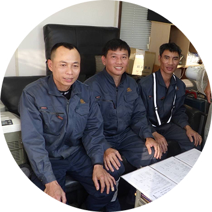
働きやすい環境
安全教育や日々の
コミュニケーションを大切にし、
安心して働ける環境を整えています。
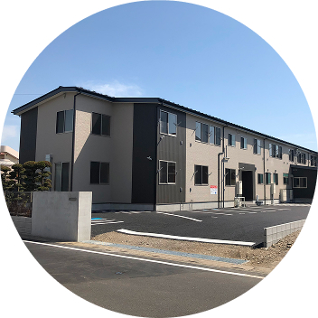
成長を応援
技術習得だけでなく、
日本での生活や将来のキャリア形成も
サポートしています。
地域の未来を支える仲間を
募集しています
経験者はもちろん、未経験からのチャレンジも歓迎しています。
地域に貢献できる仕事に興味のある方は、ぜひお気軽にお問い合わせください。
- 職種
- 土木作業員
- 勤務地
- 埼玉県を中心に東京、千葉県等
- 勤務時間
- 8：00〜17：00（現場により夜勤勤務あり）
- 休日
- 土、日、祝日、夏季休暇、年末年始休暇（現場出勤あり）
- 必要なスキル
- 運転免許書があれば尚可
- 福利厚生
- 社会保険完備、宿舎完備、冷暖房、テレビ、wifiあり（寮費20,000円）
- 応募方法
- 履歴書（写真付）メール又は郵送
よくある質問
-
A
はい。未経験の方も歓迎しています。
先輩社員が丁寧に指導し、仕事を覚えられる環境があります。 -
A
普通自動車運転免許があれば尚可です。
業務に必要な資格については取得支援も行っています。 -
A
川口市を拠点に、関東一円での現場が中心です。
-
A
転勤はありません。地域に根差して長く働くことができます。
-
A
社員同士の距離が近く、困ったことがあれば気軽に相談できる環境です。